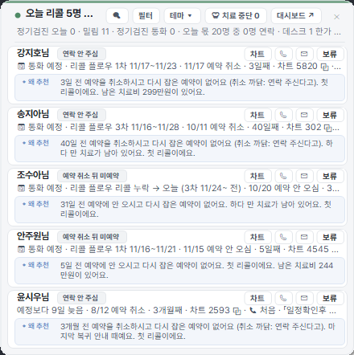

홈 › 치과 AI
치과 AI, 데스크에서는 어디에 쓰나
치과 AI라고 하면 사진 판독이나 상담 요약을 먼저 떠올립니다. 데스크에서는 더 단순한 곳에 씁니다. 쌓여 있는 덴트웹 기록을 읽고, 오늘 먼저 할 일을 골라 주는 것입니다. 치과 데스크알리미가 데스크에서 하는 일을 정리했습니다.

기록을 읽고 골라 주는 일
- 리콜 — 누구에게 먼저
- 덴트웹의 진료·예약·메모 기록을 읽고, 다시 오실 가능성이 높은 분과 전화할 이유를 골라 순서를 정합니다.
- 「3월에 갈게요」 기억
- 히든메모 속 「내년 3월에 오신대요」 같은 말을 읽어 두었다가 그 달 1일에 리콜 카드로 올립니다.
- 환자가 말한 불편(C.C.) 챙기기
- 진료 메모에 적힌 환자 말을 찾아 접수·귀가 때 카드로 다시 보여 줍니다.
- 빈자리 채우기
- 예약이 취소된 시간에 맞는 환자 후보를 골라 줍니다.
그 다음은 사람이 합니다
골라 준 명단을 보고 전화하는 것, 환자분께 설명하는 것은 데스크 선생님입니다. 치과 데스크알리미는 판단에 필요한 것을 먼저 꺼내 놓고, 통화 결과는 덴트웹 차트에 저절로 적습니다. 데스크 일 전체를 어떻게 줄이는지는 치과 데스크 자동화에서 볼 수 있습니다.
자주 묻는 질문
- 치과 AI 프로그램을 쓰면 환자 자료가 밖으로 나가나요?
- 처음 설치할 때 치과 자료를 어디에 어떻게 쓰는지 안내하고 동의를 받은 뒤에 시작합니다. 자세한 것은 상담 때 그대로 물어보세요.
- 치과 AI가 데스크 선생님을 대신하나요?
- 아닙니다. 전화하고 환자를 맞는 것은 데스크 선생님입니다. 치과 데스크알리미는 누구에게, 언제, 무슨 말로 연락할지 미리 골라 두는 일을 맡습니다.
- 덴트웹이 아닌 차트도 되나요?
- 지금은 덴트웹을 쓰는 치과의 Windows 데스크 PC용입니다.